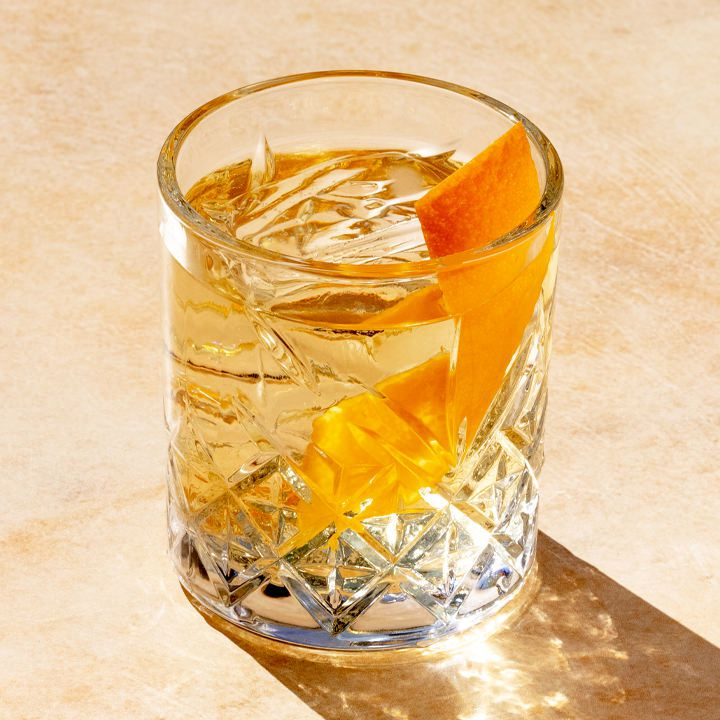

Old Fashioned

Description
When you get right down to it, the Bourbon Old Fashioned is little more than a slug of whiskey,
seasoned and sweetened. Yet for all of its suave simplicity, the drink remains as relevant today as it was when it first captured drinkers’
hearts 200 years ago.
Ingredients
- 1 teaspoon sugar
- 3 dashes Angostura bitters
- 1 teaspoon water
- 2 ounces bourbon (or rye whiskey, if preferred)
- Garnish: orange twist
Steps
- Add the sugar and bitters into a mixing glass, then add the water, and stir until the sugar is nearly dissolved.
- Fill the mixing glass with ice, add the bourbon, and stir until well-chilled.
- Strain into a rocks glass over one large ice cube.
- Express the oil of an orange twist over the glass, then drop into the glass to garnish.
Return to main page